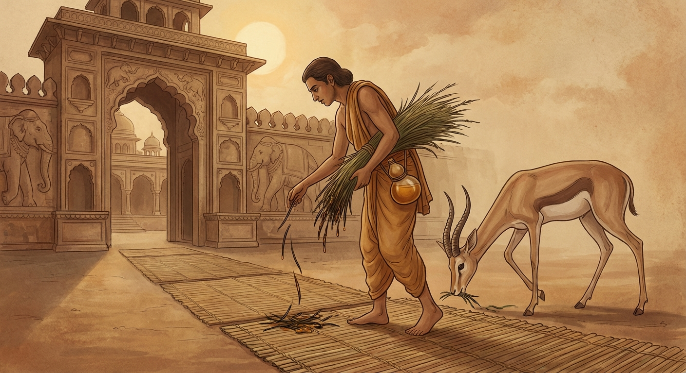

4. වාතමිග ජාතකය (14)
“රස තෘෂ්ණාවට වඩා ලාමක වූවක් නැත” යන මේ ධර්ම දේශනාව ශාස්තෲන් වහන්සේ ජේතවනාරාමයේ වැඩ වසන සමයෙහි චූළපිණ්ඩපාතික තිස්ස තෙරුන් අරබයා දේශනා කළහ. බුදුරදුන් රජගහ නුවර ඇසුරු කොට වේළුවනාරාමයේ වැඩ වසන කල්හි, මහත් ධන සම්පත් ඇති සිටු කුලයක පුත්රයෙක් වූ තිස්ස නම් කුමරු, එක් දිනක් වේළුවනයට ගොස් බුදුරදුන්ගෙන් දහම් අසා පැවිදි වීමට කැමති ව පැවිද්ද ඉල්ලා සිටියේය. එහෙත් මව්පියන් අවසර නොදුන් හෙයින් ප්රතික්ෂේප වූ ඔහු, රට්ඨපාල තෙරුන් මෙන් දින හතක් ආහාර වර්ජනය කොට මව්පියන්ගෙන් අවසර ගෙන බුදුරදුන් වෙත පැවිදි විය. බුදුරදුන් ඔහු පැවිදි කරවා අඩ මසක් පමණ වේළුවනාරාමයේ වැඩ සිට ජේතවනාරාමයට වැඩම කළහ. එහිදී මේ කුල පුත්රයා තෙළෙස් ධුතාංග සමාදන් ව සැවැත් නුවර ගෙපිළිවෙළින් පිඬු පිණිස හැසිරෙමින් කල් ගෙවයි. “චූළපිණ්ඩපාතික තිස්ස තෙරුන්” යැයි කී කල අහස් තලයෙහි පුන් සඳ මෙන් බුද්ධ ශාසනයෙහි ප්රකට විය.
එකල රජගහ නුවර නැකැත් කෙළිය පවතින කල්හි, තෙරුන්ගේ මව්පියෝ ඔහු ගිහි කල පැළඳි ආභරණ රිදී තැටියක බහා ළෙහි තබාගෙන, “අපගේ පුතණුවන් පෙර නැකැත් සැණකෙළිවල දී මේ මේ ආභරණවලින් සැරසී සැණකෙළි පවත්වයි. ශ්රමණ ගෞතමයන් වහන්සේ අපගේ ඒ එකම පුත්රයා රැගෙන සැවැත් නුවරට වැඩම කළ සේක. දැන් අප පුත්රයා කොහි හුන්නේ ද, කොහි සිටින්නේ දැ” යි කියමින් හඬති.
එකල එක් වර්ණ දාසියක් (වෙසඟනක්) ඒ කුලයට ගොස් සිටු බිරිඳ හඬනු දැක, “ආර්යාවනි, කුමක් නිසා හඬන්නෙහි දැ” යි ඇසුවාය. ඇය ඒ කරුණ දැන්වූවාය. “ආර්යාවනි, ඔබේ පුත්රයා කැමති කුමන දේට දැ” යි ඇසූ විට, “අසවල් අසවල් දේට යැ” යි කීවාය. “ඉදින් ඔබ මෙම ගෘහයෙහි ඇති සියලු සම්පත් මට දෙන්නේ නම්, මම ඔබේ පුතා මෙහි කැඳවාගෙන එන්නෙමි” යි වෙසඟන කීවාය. සිටු බිරිඳ “යහපතැ” යි එය පිළිගෙන ගමනට සුදුසු වියදම් දී, “යන්න, තමාගේ බලයෙන් මගේ පුතා කැඳවාගෙන එන්නැ” යි කියා මහත් පිරිවරක් සමඟ ඇය පිටත් කළාය. ඇය ආවරණය කළ යානයක නැගී සැවැත් නුවරට ගොස්, තෙරුන් පිඬු පිණිස හැසිරෙන වීථියෙහි නිවසක නැවතී, සිටු කුලයෙන් පැමිණි මිනිසුන් නො පෙන්වා තම පිරිවරින් පිරිවරාගෙන සිටියාය. තෙරුන් පිඬු පිණිස වැඩි කල්හි පළමුව යාගු හැන්දක් ද, පසුව රසවත් භෝජන ද පූජා කොට රස තෘෂ්ණාවෙන් බැඳ, අනුක්රමයෙන් නිවස තුළට වඩා හිඳුවා දානය දෙමින්, ඔහු තම වසඟයට පැමිණි බව දැන ගිලන් බවක් පෙන්වා අභ්යන්තර කාමරයේ (යහන් ගැබේ) වැතිර සිටියාය. තෙරුන් වහන්සේ ද පිඬු සිඟන වේලෙහි ගෙපිළිවෙළින් හැසිරෙන්නේ ඇගේ නිවසට වැඩම කළහ. පිරිවර ජනයා තෙරුන්ගේ පාත්රය ගෙන තෙරුන් වහන්සේ නිවස තුළ හිඳුවූහ. තෙරුන් වහන්සේ අසුන් ගෙන ම “උපාසිකාව කොහි දැ” යි විමසූහ. “ස්වාමීනි, ඇය ගිලන්ව සිටින්නීය. ඔබ වහන්සේ දැකීමට කැමති වන්නී යැ” යි කීහ. උන්වහන්සේ රස තෘෂ්ණාවෙන් බැඳුණේ, තමාගේ ධූත සමාදානය බිඳ ඇය වැතිර සිටි තැනට වැඩම කළහ. ඇය තමා පැමිණි කාරණය පවසා, ඔහු පොළඹවා, රස තෘෂ්ණාවෙන් බැඳ, සිවුරු හරවා (උපැවිදි කොට), තම වසඟයට ගෙන, යානයක හිඳුවා මහත් පිරිවරින් රජගහ නුවරට ම ගියාය. මේ පුවත ප්රකට විය.
භික්ෂූන් වහන්සේලා ධර්ම සභාවෙහි රැස් ව, “චූළපිණ්ඩපාතික තිස්ස තෙරුන් එක් වර්ණ දාසියක් විසින් රස තෘෂ්ණාවෙන් බැඳගෙන ගියා ලු” යැයි කථාවක් ඇති කළහ. ශාස්තෲන් වහන්සේ ධර්ම සභාවට වැඩම කොට පැනවූ අසුනෙහි වැඩහිඳ, “මහණෙනි, දැන් කිනම් කථාවකින් යුක්ත ව හුන්නාහු දැ” යි විමසූ සේක. භික්ෂූහු ඒ පුවත සැල කළහ. “මහණෙනි, මේ භික්ෂුව රස තෘෂ්ණාවෙන් බැඳී ඇගේ වසඟයට ගියේ දැන් පමණක් නො වෙයි; පෙරත් ඇගේ වසඟයට ගියේ මැ ය” යි වදාරා අතීත කථාව ගෙනහැර දැක්වූ සේක.
අතීතයෙහි බරණැස් නුවර බ්රහ්මදත්ත රජුට සඤ්ජය නම් උයන්පල්ලෙක් සිටියේය. එකල සුළඟ මෙන් වේගයෙන් දිවෙන එක් මුවෙක් (වාතමිග) උයනට අවුත් සඤ්ජය දැක පලා යයි. සඤ්ජය ද මුවා බියගන්වා පලවා නො හරියි. මුවා ද නැවත නැවත අවුත් උයනෙහි ම හැසිරෙයි. උයන්පල්ලා උයනෙහි නානාවිධ මල් හා පලතුරු ගෙන දිනපතා රජු වෙත ගෙන යයි. දිනක් රජතුමා උයන්පල්ලා අමතා, “යහළු උයන්පල්ල, උයනෙහි කිසියම් පුදුම සහගත දෙයක් දකින්නෙහි දැ” යි විමසීය. “දේවයිනි, වෙන කිසිවක් නො දකිමි. එක් වාතමිගයෙක් (මුවෙක්) අවුත් උයනෙහි හැසිරෙයි; එපමණක් දකිමි” යි කීවේය. “එසේ නම් ඌ අල්ලා ගැනීමට හැකි දැ” යි රජු ඇසීය. “දේවයිනි, මී පැණි ස්වල්පයක් ලැබෙන්නේ නම් මුවා රජ මාලිගාව තුළට ම ගෙන ඒමට මට හැකි ය” යි ඔහු කීවේය. රජතුමා ඔහුට මී පැණි ලබා දුන්නේය. ඔහු එය රැගෙන උයනට ගොස් වාතමිගයා හැසිරෙන තැන්හි තණකොළවල මී පැණි තවරා සැඟවී සිටියේය. මුවා පැමිණ මී පැණි තැවරූ තණකොළ කා රස තෘෂ්ණාවෙන් බැඳුණේ, අන් තැනකට නො ගොස් උයනට ම එයි. උයන්පල්ලා, මුවා මී පැණි තැවරූ තණකොළවලට ලොල් වූ බව දැන ක්රමයෙන් තමා දකින්නට සැලැස්වීය. මුවා උයන්පල්ලා දැක දින කිහිපයක් පලා ගොස්, නැවත නැවත දකින විට විශ්වාසයට පැමිණ, ක්රමයෙන් ඔහුගේ අතේ තිබූ තණකොළ කෑමට පටන් ගත්තේය.
ඔහු මුවා තමා කෙරෙහි විශ්වාසයට පැමිණි බව දැන, රජ මාලිගාව දක්වා මාර්ගය පැදුරු (පැලලි) වලින් ආවරණය කොට, තැන් තැන්වල අතු කැබලි දමා, මී පැණි බඳුනක් උරහිසෙහි එල්ලාගෙන, තණකොළ මිටියක් කිහිල්ලෙහි රුවාගෙන, මී පැණි තැවරූ තණකොළ මුවා ඉදිරියෙහි විසුරුවමින් රජ මාලිගාව තුළට ම ගියේය. මුවා ඇතුළට පැමිණි කල්හි දොර වසා දැමූහ. මුවා මිනිසුන් දැක වෙවුලමින් මරණ බියෙන් තැතිගෙන මාලිගා මිදුලෙහි ඔබමොබ දුවයි. රජතුමා ප්රාසාදයෙන් බැස වෙවුලමින් සිටි මුවා දැක මෙසේ සිතී ය: “වාතමිගයෝ නම් මිනිසුන් දුටු තැනකට දින හතක් යන තුරු නො යති. බිය වූ තැනකට දිවි ඇති තෙක් නො යති. එබඳු වූ, ඝන වනය ඇසුරු කරන වාතමිගයා රස තෘෂ්ණාවෙන් බැඳී දැන් මෙබඳු තැනකට පැමිණියේය. අහෝ! ලෝකයෙහි රස තෘෂ්ණාවට වඩා ලාමක වූ පාපයක් නැත” යි පවසා මෙම ගාථාවෙන් ධර්ම දේශනාව ආරම්භ කළේය.

“වාසස්ථාන කෙරෙහි ඇති ආශාවට හෝ මිතුරු සබඳතා කෙරෙහි ඇති ආශාවට හෝ වඩා, රස කෙරෙහි ඇති ආශාව (රස තෘෂ්ණාව) ඉතා ලාමක වේ. සඤ්ජය තෙම වන ගහණය ඇසුරු කළ වාතමිගයා රසයෙන් වසඟ කරගෙන (මාලිගාවට) ගෙන ආවේය.”
“වාසස්ථාන පිළිබඳ ආශාව ද, මිතුරු සබඳතා පිළිබඳ ආශාව ද යන මේ ආශාවන්ට වඩා මධුර ඇඹුල් ආදී රස පිළිබඳ ආශාව වඩා ලාමක වේ. සඤ්ජය, වන ගහණය ඇසුරු කොට සිටි වාතමිගයා රසයෙන් වසඟ කොට ගෙන ආවේය.”
එහි “කිර” යනු ‘යැයි අසන්නට ලැබේ’ (අනුශ්රැතිය) යන අර්ථය දෙන නිපාත පදයකි. “රසෙහි” යනු දිවෙන් දත යුතු මධුර හා ඇඹුල් ආදී රසයන් ය. “පාපියො” යනු වඩාත් ලාමක වූ යන්නයි. “ආවාසෙහිව සන්ථවෙහි වා” යනු, නිතර වසන ස්ථාන වන නිවාසයන්හි ද, මිත්ර සන්ථවයෙහි (ඇසුරෙහි) ද ඇතිවන ඡන්දරාගය (කැමැත්ත) පවිටු ය. එහෙත් ස්වකීය කැමැත්තෙන් පරිභෝග කරන ඒ ආවාසයන්ට හෝ මිත්ර සන්ථවයන්ට වඩා, සිය ගුණයෙන් ද, දහස් ගුණයෙන් ද, ලක්ෂ ගුණයෙන් ද, (රස තෘෂ්ණාව) ඉතා ලාමක ය. මක්නිසාද යත්, එය දිනපතා සේවනය කළ යුතු වීමෙන් ද, ආහාර නොමැති ව ජීවිතේන්ද්රිය පවත්වා ගත නොහැකි වීමෙන් ද, බලවත් තෘෂ්ණාවෙන් යුතුව විඳිනා රසය ම වඩාත් පාපී වන බැවිනි. බෝසතාණන් වහන්සේ අනුශ්රැතියෙන් (ආරංචියෙන්) පැමිණි දෙයක් මෙන් මෙම අර්ථය ගෙන, “රස තෘෂ්ණාවට වඩා ලාමක දෙයක් නැතැයි කියනු ලැබේ” යැයි පැවසූහ. දැන් එම රසයන්ගේ ලාමක බව දක්වනු පිණිස “වාතමිගං” යනාදිය වදාළහ. එහි “ගහනනිස්සිතං” යනු වන ගහණය ඇසුරු කළ බවයි. මෙහි අදහස මෙයයි: රසයන්ගේ ලාමක ස්වභාවය බලන්න; මහා වනයෙහි වන ගහණය ඇසුරු කරමින් සිටි වාතමිගයා, සඤ්ජය නම් උයන්පල්ලා විසින් මී පැණි රසයෙන් තම වසඟයට ගෙන එන ලදී. එබැවින් හැම අයුරින් ම බලවත් තෘෂ්ණාවෙන් පරිභෝග කරන රසයන්ට වඩා අන් ලාමක වූ පාපී දෙයක් නැතැයි රස තෘෂ්ණාවෙහි දෝෂය ප්රකාශ කළේය. එසේ දෝෂය ප්රකාශ කොට ඒ මුවා නැවත වනයට ම පිටත් කර හැරියේය.
බුදුරජාණන් වහන්සේ, “මහණෙනි, ඒ වර්ණ දාසිය මේ භික්ෂුව රස තෘෂ්ණාවෙන් බැඳ තමා වසඟයට ගත්තේ දැන් පමණක් නොවේ; පෙරත් එසේ කළා ය” යි මේ ධර්ම දේශනාව ගෙනහැර දක්වා, පූර්වාපර සන්ධි ගළපා ජාතකය සමාප්ත කළ සේක. “එකල සඤ්ජය නම් උයන්පල්ලා වූයේ මේ වර්ණ දාසිය යි. වාතමිගයා වූයේ චූළපිණ්ඩපාතික තිස්ස තෙර ය. බරණැස් රජු වූයේ මම ම ය.”
සිව් වැනි වූ වාතමිග ජාතක වර්ණනාවයි.